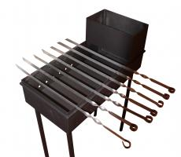

Мангал сварной МСв-3
6000 P
ОПИСАНИЕ ТОВАРА:
Мангал сварной 65×30×15 см толщина металла 2,0 мм
ПОДРОБНОЕ ОПИСАНИЕ ТОВАРА:
Мангал сварной с секцией для розжига, предназначен для приготовления пищи на углях. Специальная секция для розжига позволяет не только быстро затопить мангал и обеспечивать постоянный запас угля, но и даёт возможность разогревать пищу. На мангале с лёгкостью можно готовить пищу как на шампурах, так и на решётках. Наличие съёмных ножек делает мангал компактным и позволяет транспортировать его в автомобиле.